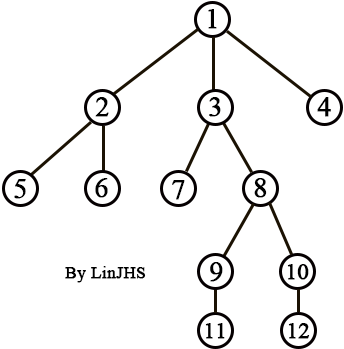

求 LCA（最近公共祖先）
介绍
最近公共祖先（Least Common Ancestor）
对于有根树 T 的两个结点 u 、 v ，最近公共祖先 LCA(u,v) 表示一个结点 x ，满足 x 是 u 和 v 的祖先且 x 的深度尽可能大。
在这里，一个节点也可以是它自己的祖先。
倍增求 LCA
一、基本思想
首先我们先考虑暴力求点 u 和 v 的 LCA 的方法。
假设 depth[u]>=depth[v] ，那么可以先让 u 向上跳，使得 u 和 v 在同一深度上，接下来不断让 u 和 v 上跳，直到 u 和 v 到达同一节点，得到 LCA 。
可以发现，当树的深度很大时，暴力求 LCA 的复杂度是 O(n) 。
倍增求 LCA 可以在 O(nlogn) 的预处理之后， O(logn) 询问两个点的 LCA。
倍增求 LCA 的基本思想就是使得一次可以向上跳多步，以此来做到优化复杂度。
我们定义 fa[u][i] 表示 u 的 \(2^i\) 级祖先，即 u 向上跳 \(2^i\) 步所到达的位置
我们可以得到：
fa[u][0]为u的父亲fa[u][i+1]=fa[fa[u][i]][i]
二、流程
先预处理出数组 fa[u][i] ，复杂度 O(nlogn) 。
首先，先让较深的点往上跳，使得 u 和 v 两个点深度相同（不妨设 u 更深）：
- 让
i从logn倒着枚举到0，当u向上跳2^i步不会跳过头的话，那么u=fa[u][i]，直到二者深度一致。
接着，让 u 和 v 一起往上跳：
- 让
i从logn倒着枚举到0，当fa[u][i]!=fa[v][i]，则往上跳。 - 最后可以得到
fa[u][0]==fa[v][0]。
则 LCA 为 fa[u][0]
核心代码：
int lca(int u,int v)
{
if(dep[u]<dep[v])
swap(u,v);
for (int i=20;i>=0;i--)
if(dep[fa[u][i]]>=dep[v])
u=fa[u][i];
if(u==v)
return u;
for(int i=20;i>=0;i--)
if(fa[u][i]!=fa[v][i])
u=fa[u][i],v=fa[v][i];
return fa[u][0];
}
运用 DFS 序求 LCA （ ST 算法）
DFS 序就是用 DFS 方法遍历整棵树得到的序列。
两个点的 LCA 一定是两个点在 DFS 序中出现的位置之间深度最小的那个点。
寻找最小值可以使用 RMQ（区间最值）问题的 ST 算法。
复杂度：O(nlogn)
此算法基于动态规划。
用 f[i][j] 表示区间起点为 j 长度为 \(2^i\) 的区间内的最小值所在下标，通俗的说，就是区间 \([j,j+2^i)\) 的区间内的最小值的下标。
从定义可知，这种表示法的区间长度一定是 \(2\) 的幂，所以除了单位区间（长度为 \(1\) 的区间）以外，任意一个区间都能够分成两份，并且同样可以用这种表示法进行表示：
\([j,j+2^i)\) 的区间可以分成 \([j,j+2^{i-1})\) 和 \([j+2^{i-1},j+2^i)\) ，于是可以列出状态转移方程为：
f[i][j]=RMQ(f[i-1][j],f[i-1][j+2^(i-1)])
f[m][n] 的状态数目为 nlogn ，每次状态转移耗时 O(1) ，所以预处理总时间为 O(nlogn) 。
原数组长度为 n ，当 \([j,j+2^i)\) 区间右端点 \(j+2^i-1>n\) 时如何处理？
在状态转移方程中只有一个地方会下标越界，所以当越界的时候状态转移只有一个方向，即当 \(j+2^{i-1}>n\) 时， f[i][j] =f[i-1][j] 。
求解 f[i][j] 只需要两层循环的状态转移就搞定了。
f[i][j] 的计算只是做了一步预处理，但是我们在询问的时候，不能保证每个询问区间长度都是 \(2\) 的幂，如何利用预处理出来的值计算任何长度区间的值就是我们接下来要解决的问题。
首先只考虑区间长度大于 \(1\) 的情况（区间长度为 \(1\) 的情况，最小值就等于它本身），给定任意区间 \([a,b] (1\le a<b\le n)\) ，必定可以找到两个区间 \(X\) 和 \(Y\) ，它们的并是\([a,b]\) ，并且区间 \(X\) 的左端点是 \(a\) ，区间 \(Y\) 的右端点是 \(b\) ，而且两个区间长度相当，且都是 \(2\) 的幂（两个区间可以重叠）。
设区间长度为 \(2^k\) ，则 \(X\) 表示的区间为 \([a,a+2^k)\) ， \(Y\) 表示的区间为 \((b-2^k,b]\) ，则需要满足一个条件就是 \(X\) 的右端点必须大于等于 \(Y\) 的左端点减一，即 \(a+2^k-1 \ge b-2^k\) ，则 \(2^{k+1} \ge (b-a+1)\), 两边取对数（以 \(2\) 为底），得 \(k+1\ge \log_2(b-a+1)\) ，则 \(k\ge \log_2(b-a+1)-1\) ，\(k\) 只要需要取最小的满足条件的整数即可。
仔细观察发现 \(b-a+1\) 正好为区间 \([a,b]\) 的长度 len ，所以只要区间长度一定， \(k\) 就能在常数时间内求出来。而区间长度只有 \(n\) 种情况，所以k可以通过预处理进行预存。
当 \(\log_2(len)\) 为整数时，\(k\) 取 \(\log_2(len)-1\) ，否则 \(k\) 为 \(\log_2(len)-1\) 的上整（并且只有当 len 为 \(2\) 的幂时，\(\log_2(len)\) 才为整数）。
我们注意到，在整个倍增查找 LCA 的过程中，从u到v的整条路径都被扫描了一遍。如果我们在倍增数组 f[i][j] 中再记录一些别的信息，就可以实现树路径信息的维护和查询
通过 DFS 遍历，记录每个节点到根节点的距离 dist[u] ，深度 d[u] 。
init() 求出树上每个节点 u 的 \(2^i\) 祖先 p[u][i] 。
求最近公共祖先，根据两个节点的的深度，如不同，向上调整深度大的节点，使得两个节点在同一层上，如果正好是祖先结束，否则，将两个节点同时上移，查询最近公共祖先。
ST 算法可以扩展到二维，用四维的数组来保存状态，每个状态表示的是一个矩形区域中的最值，可以用来求解矩形区域内的最值问题。
核心代码：
//TODO
Tarjan 算法（离线算法）
离线算法，是指首先读入所有的询问（求一次 LCA 叫做一次询问），然后重新组织查询处理顺序以便得到更高效的处理方法。 Tarjan 算法是一个常见的用于解决 LCA 问题的离线算法，它结合了深度优先遍历和并查集，整个算法为线性处理时间。
Tarjan 算法是基于并查集的，利用并查集优越的时空复杂度，可以实现 LCA 问题的 O(n+Q) 算法，这里 Q 表示询问 的次数。
同上一个算法一样， Tarjan 算法也要用到深度优先搜索，算法大体流程如下：
- 对于新搜索到的一个结点，首先创建由这个结点构成的集合，再对当前结点的每一个子树进行搜索，每搜索完一棵子树，则可确定子树内的 LCA 询问都已解决。
- 其他的 LCA 询问的结果必然在这个子树之外，这时把子树所形成的集合与当前结点的集合合并，并将当前结点设为这个集合的祖先。
- 之后继续搜索下一棵子树，直到当前结点的所有子树搜索完。
- 这时把当前结点也设为已被检查过的，同时可以处理有关当前结点的 LCA 询问：如果有一个从当前结点到结点
v的询问，且v已被检查过，则由于进行的是深度优先搜索，当前结点与v的最近公共祖先一定还没有被检查，而这个最近公共祖先的包涵v的子树一定已经搜索过了，那么这个最近公共祖先一定是v所在集合的祖先。

如图
根据实现算法可以看出，只有当某一棵子树全部遍历处理完成后，才将该子树的根节点标记为黑色（初始化是白色），假设程序按上面的树形结构进行遍历：
- 首先从节点
1开始，然后递归处理根为2的子树，当子树2处理完毕后，节点2、5、6均为黑色； - 接着要回溯处理
3子树，首先被染黑的是节点7（因为节点7作为叶子不用深搜，直接处理）， - 接着节点
7就会查看所有询问(7,x)的节点对，假如存在(7,5)，因为节点5已经被染黑，所以就可以断定(7,5)的最近公共祖先就是fa[5]，即节点1（因为2子树处理完毕后，子树2和节点1进行了并查集合并，fa[5]返回了合并后的树的根1，此时树根的fa[]值就是1）。
有人会问如果没有 (7,5) ，而是有 (5,7) 询问对怎么处理呢? 我们可以在程序初始化的时候做个技巧，将询问对 (a,b) 和 (b,a) 全部存储，这样就能保证完整性。
参考代码如下：
//TODO
树链剖分
对于输入的这棵树，先对其进行树链剖分处理。显然，树中任意点对 (u,v) 只存在两种情况：
- 两点在同一条重链上。
- 两点不在同一条重链上。
对于1， LCA(u,v) 明显为 u , v 两点中深度较小的点，即 min(deep[u],deep[v]) 。
对于2，我们只要想办法将 u , v 两点转移到同一条重链上即可。
所以，我们可以将 u , v 一直上调，每次将 u , v 调至重链顶端，直到 u , v 两点在同一条重链上即可。
注：部分资料来源于百度百科

This work is licensed under a Creative Commons Attribution-NonCommercial-NoDerivatives 4.0 International License.